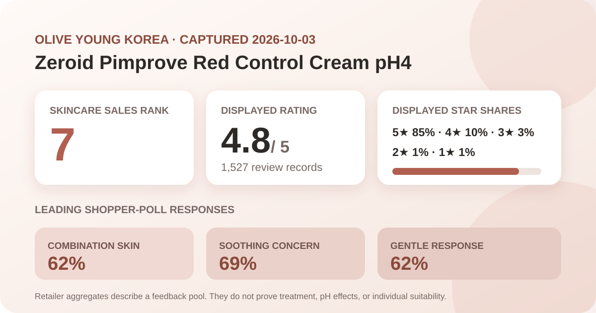
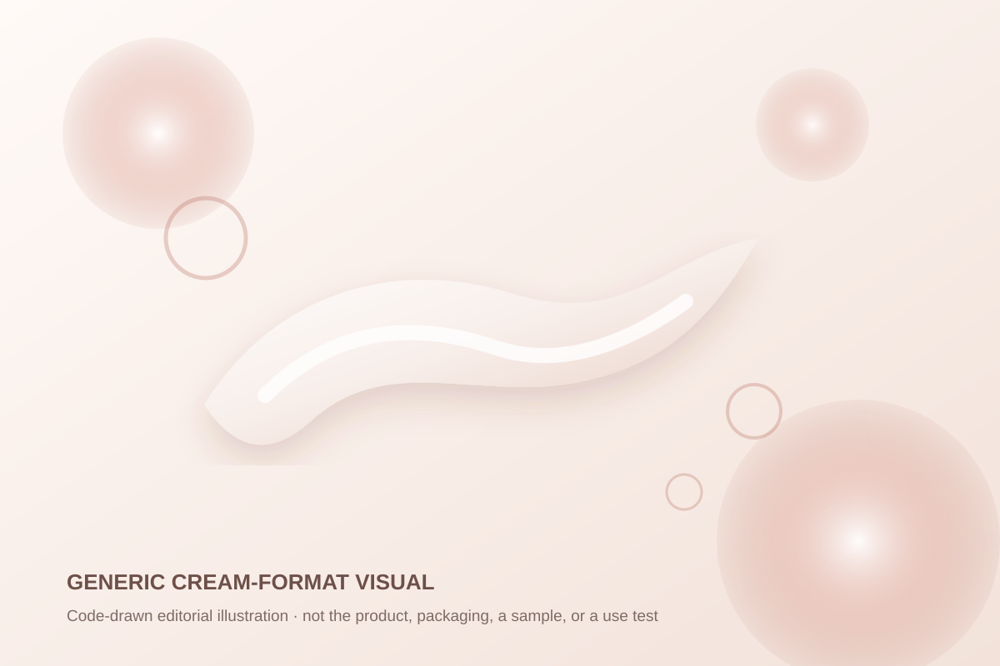

Data captured October 3, 2026. This is an independent analysis of retailer-displayed product information and anonymous aggregate review signals. I did not test the product, and no individual review, reviewer name, product photograph, or user photograph is copied, translated, or summarized.

The short version: Zeroid Pimprove Red Control Cream pH4 appeared at number 7 in Olive Young Korea's live skincare sales ranking. The product header and detailed review panel both displayed 4.8 out of 5 from 1,527 review records. Five-star selections accounted for 85% of the displayed distribution, while the largest shopper-poll responses were combination skin at 62%, soothing at 69%, and gentle at 62%. These are storefront signals, not proof that the cream treats redness, changes skin pH, repairs a barrier, or suits a particular person.
The five-star share dominates, but the lower categories remain visible. The 15% outside five stars matters because a 4.8 average can otherwise look more unanimous than the detailed distribution. The shares total 100% as displayed, yet that neat total does not reveal the platform's rounding method, sampling rules, review eligibility, moderation, campaign participation, or how many records sat near a rounding boundary.
The product header and full review view repeated the same 1,527-record total. That agreement reduces the chance of attaching the rating to the wrong listing or a stale panel. It does not independently verify every buyer, establish that every linked record concerns the exact gift set, or explain how ratings across same-content configurations are combined.
Combination skin was the largest displayed response at 62%, followed by oily skin at 38%; dry skin appeared at 0%. That is a description of represented responses, not evidence that combination or oily skin will benefit more. The interface did not show how shoppers defined those categories, whether they could choose only one, how many reviewers answered, or whether seasonal and treatment-related changes affected self-classification.
A displayed 0% should not be read as literally no dry-skin user ever reviewed the product. It may reflect rounding, the respondents who answered that panel, or the current linked feedback mix. It also does not prove the cream is unsuitable for dry skin. Suitability depends on the current formula, climate, amount, other products, tolerance, and the person's needs—questions that a retail poll cannot resolve.
The concern poll showed soothing at 69% and moisture at 31%, while wrinkle/brightening displayed 0%. These labels indicate which concern respondents selected in the retailer interface. They are not measured changes in redness, inflammation, water content, transepidermal water loss, wrinkles, or pigmentation. “Soothing” in a poll is not a medical endpoint.
The irritation panel displayed 62% gentle, 38% ordinary, and 0% felt irritation. The gentle response is favorable but less concentrated than the five-star share. More importantly, it cannot predict individual compatibility. The poll does not standardize application area, amount, frequency, duration, concurrent actives, allergies, damaged skin, medical conditions, or how respondents interpreted the choices.

The listing identifies the product as an 80 ml cream. That supports only a broad cream-format classification. I did not open, dispense, spread, smell, wear, layer, or patch-test it. I cannot report slip, richness, cooling, tack, residue, finish, absorption time, fragrance, makeup behavior, or comparison with another moisturizer.
The local illustration is intentionally abstract. Its ribbon and translucent circles communicate a general leave-on cream concept without copying the real package, product photography, campaign imagery, or review photos. The colors are editorial design choices and must not be treated as a representation of the actual material.
At capture, the page described an 80 ml cream promotion with 10 ml of cream and a 7 ml ampoule as gifts. It showed a ₩33,000 reference price and ₩25,900 promotional price, along with delivery and event messaging. Pack contents, gifts, stock, coupons, option prices, and shipping can change quickly. The article records a dated listing rather than promising a future checkout total.
Rank seven means the listing held seventh place inside that retailer's selected skincare sales list at capture time. It does not mean seventh-best cream, seventh-most reviewed product, or seventh-best choice for redness, combination skin, oily skin, or sensitive skin. Promotions, placement, bundles, availability, and current demand can influence rank.
The review view contained individual text, profile labels, dates, and images. None is copied, translated, paraphrased, counted, or used as evidence in this article. A visible feed is selective and order-dependent, so a few entries cannot establish how common an experience is. Restricting the analysis to the retailer's aggregate rating, star distribution, and displayed polls keeps the evidence auditable while respecting reviewers' content and identities.
No stable retailer-level anonymous theme summary was necessary for this analysis. Accordingly, the article does not invent themes from a handful of visible entries or turn anecdotes into frequencies.
This capture did not independently reconcile a complete current ingredient list across every package or market. No ingredient amount, pH measurement, acid concentration, stability, penetration, compatibility, or therapeutic effect is inferred from the product name, rating, polls, rank, price, or category.
No claim is made that the product is fragrance-free, alcohol-free, oil-free, non-comedogenic, hypoallergenic, pregnancy-compatible, procedure-compatible, or suitable for acne, rosacea, eczema, dermatitis, infection, broken skin, or another condition. Check the current authorized label for ingredients, directions, warnings, intended use, and storage. For a diagnosed condition, recent procedure, prescription routine, or history of significant reactions, seek qualified clinical or pharmacy advice.
The captured header and detailed review panel both displayed 4.8 out of 5 from 1,527 linked records. That is a favorable retail signal, not proof of a clinical effect or personal fit.
The interface showed 85% five-star, 10% four-star, 3% three-star, 1% two-star, and 1% one-star selections.
No. It is a concern-selection share in a shopper poll. The capture did not include a controlled redness measure, comparator, baseline, duration, or clinical assessment.
No. That rounded response describes the displayed poll pool and cannot predict allergies, sensitivities, interactions, underlying conditions, or individual tolerance.
No. It is a local, brand-neutral vector visual for a general cream format and does not represent the real product or formula.
Source: Olive Young Korea product listing for Zeroid Pimprove Red Control Cream pH4 80 ml promotional set, accessed October 3, 2026. The source is a dynamic retail page; rank, price, availability, gifts, counts, percentages, and linked configurations can change after capture.
This independent article is unaffiliated with Zeroid or Olive Young. The store link contains no affiliate tracking identifier, and this site earns no commission from it.
← Back to all posts · Review-volume rankings · Skin-poll representation · Methodology